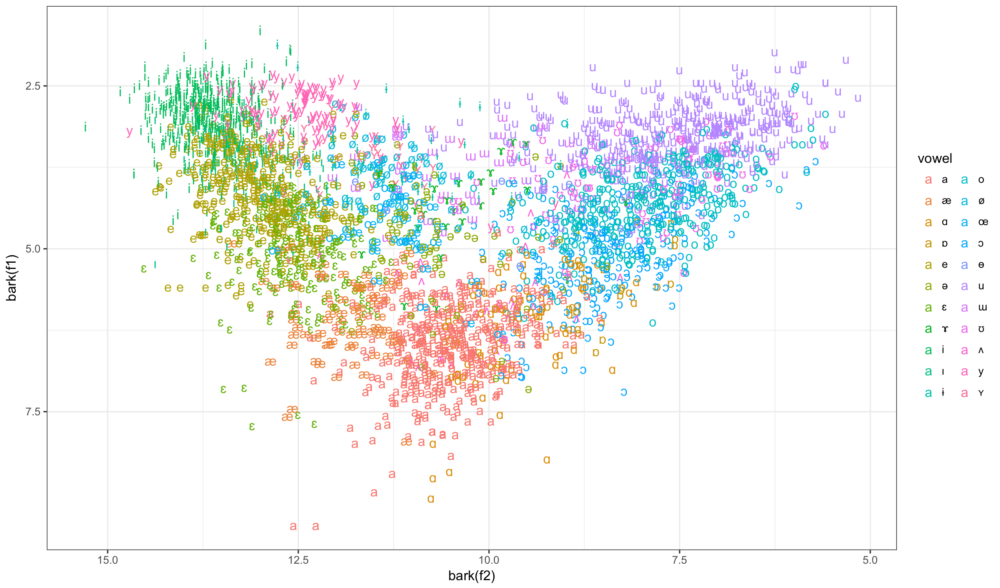

The classifier is trained on the data from Roy Becker's corpus of vowel formants. Vowels with less than 10 entries in the corpus were removed. The formant plot of the train data:

Two separate nearest-neighbour classifiers (with the number of neighbours rather arbitrarily set to 7) were trained for two-formant and three-formant queries. The KNeighborsClassifier from the Python package scikit-learn was used.
The classifiers are re-trained every time the program starts so you can supply your own reference data table. The code and the data are available in a GitHub repo: ... In order to start a local copy, clone the repo, install the deps using pipenv and execute the command indicated in the Procfile or run heroku local.